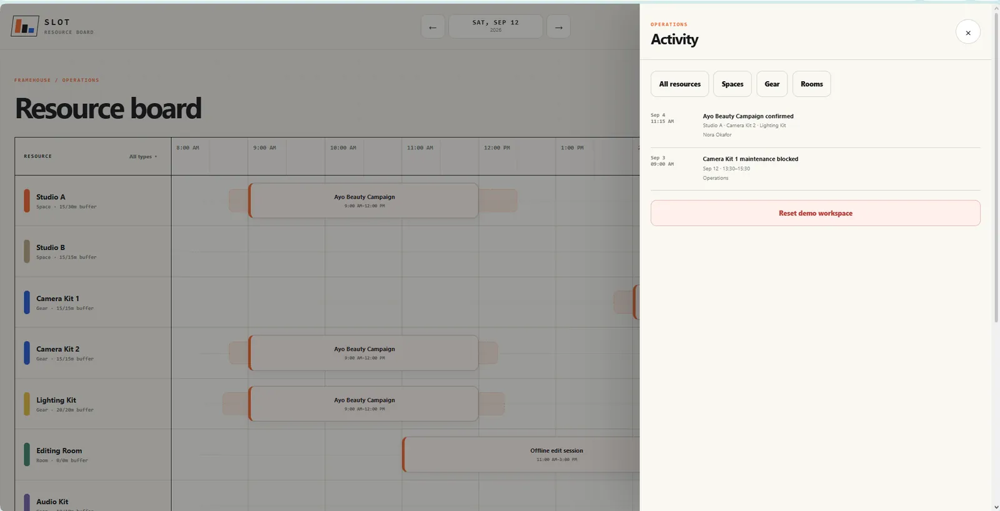
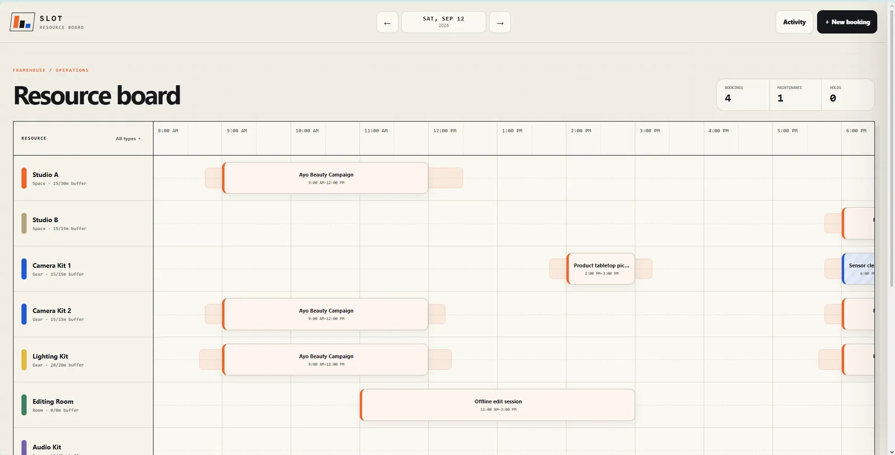
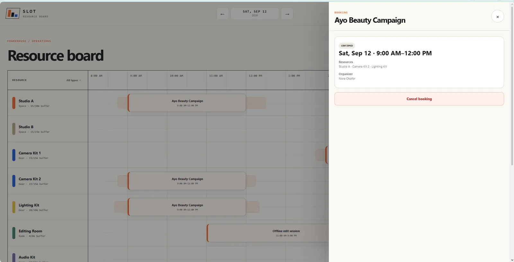
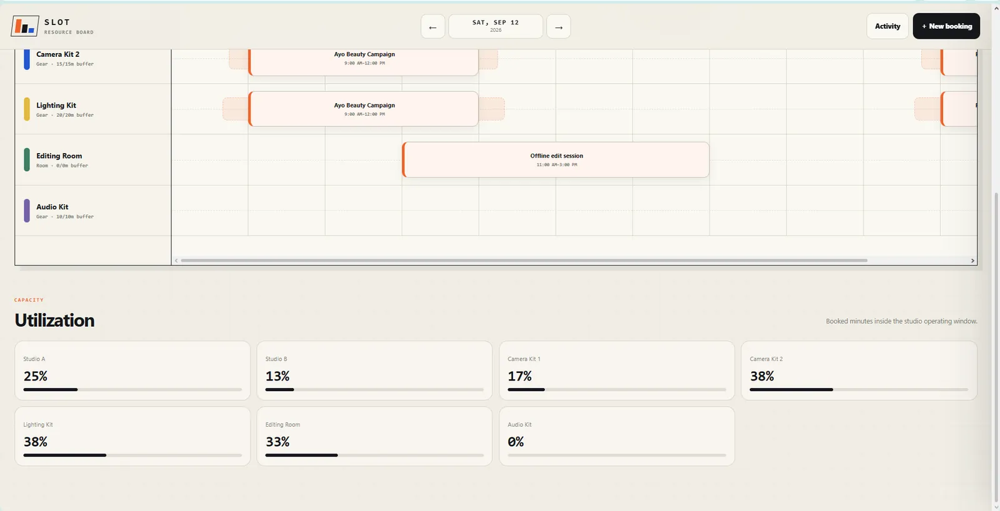

RESERVE BUNDLES
A studio booking may require several scarce resources at once, not one calendar cell.


A studio booking can depend on several resources at once, so one apparently free time slot may still be impossible to fulfil.
Slot validates the entire requested resource bundle, including overlap and turnaround buffers, before a booking can succeed.



This section reads the supplied artifacts as product evidence: what the interface has to keep understandable, connected or constrained.
A studio booking may require several scarce resources at once, not one calendar cell.
Resource availability has to be evaluated as a system rule before the interface can promise a slot.
Scheduling conflicts are product states that should be visible and understandable.
A valid reservation becomes a traceable bundle of resources, time and booking context.
A compact contact sheet keeps the page readable; select any frame to inspect it at full size.